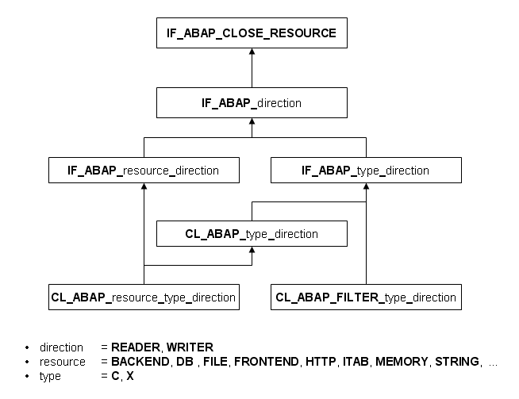

AS ABAP Release 755, ©Copyright 2026 SAP SE. All rights reserved.
ABAP - Keyword Documentation → ABAP - Programming Language → Processing Internal Data → Streaming →Classes and Interfaces for Streams
The classes and interfaces of streams are in the package SABP_STREAMS_AND_LOCATORS. Interfaces and classes that have been released for use are exposed in their package interface SABP_STREAMS_AND_LOCATORS. The following figure shows the hierarchy of the most important interfaces and classes for streams.

Classes for Data Streams and Filter Streams
The classes for data streams and filter streams are the templates for data stream objects and filter stream objects.
The classes for the data stream category start with "CL_ABAP_", followed by
The classes for the filter stream category start with "CL_ABAP_FILTER_", followed by the IDs type and direction with the same meanings as for data stream classes. Currently, no filter streams are implemented.
Interfaces and Superclasses
All public methods of the data stream and filter stream classes are declared in interfaces which allow general access to the classes.
Data stream classes inherit CL_ABAP_TYPE_direction from abstract superclasses. In these classes, methods are implemented that are dependent on the stream type and stream direction but independent of the resource.
Important Methods
In the case of data streams, the following methods are implemented as kernel methods . The actual access to the streaming data source or streaming data sink is completed by the ABAP runtime environment.
Methods for Reader Streams
Methods from the interface IF_ABAP_READER:
Methods for Writer Streams
Methods from the interface IF_ABAP_WRITER:
Methods for Both Stream Categories
Methods from the IF_ABAP_CLOSE_RESOURCE interface: